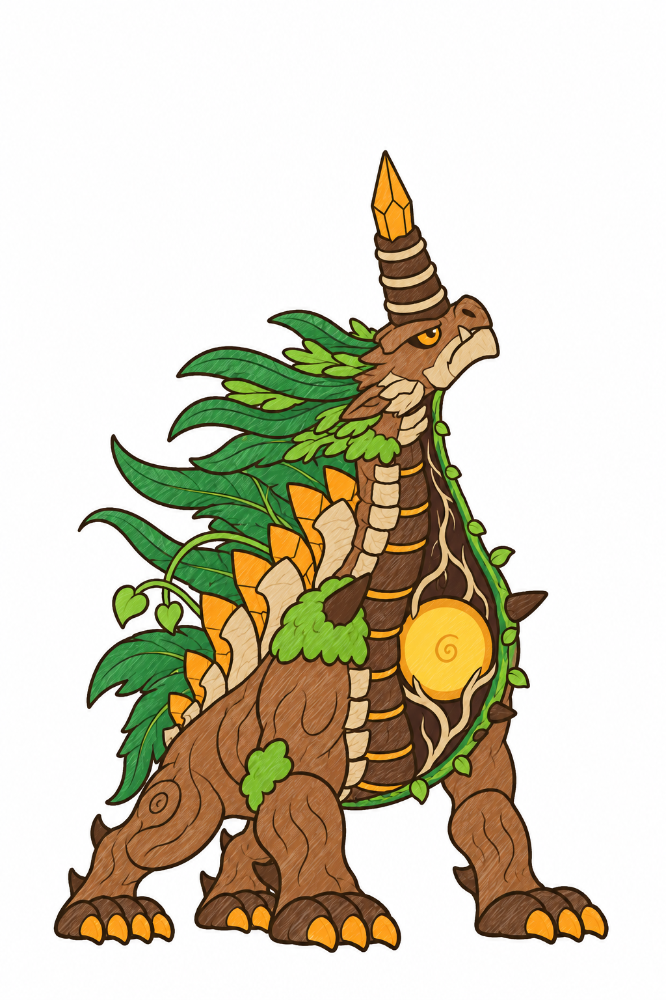
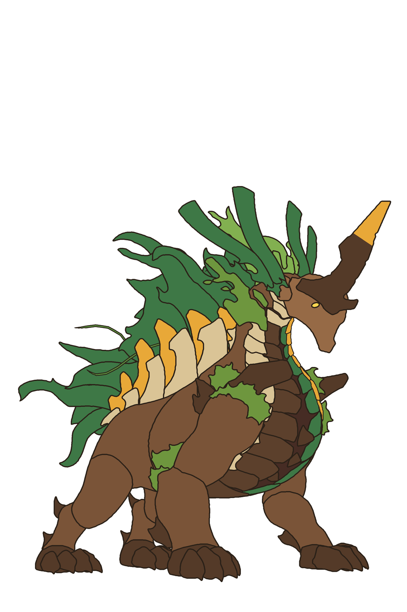
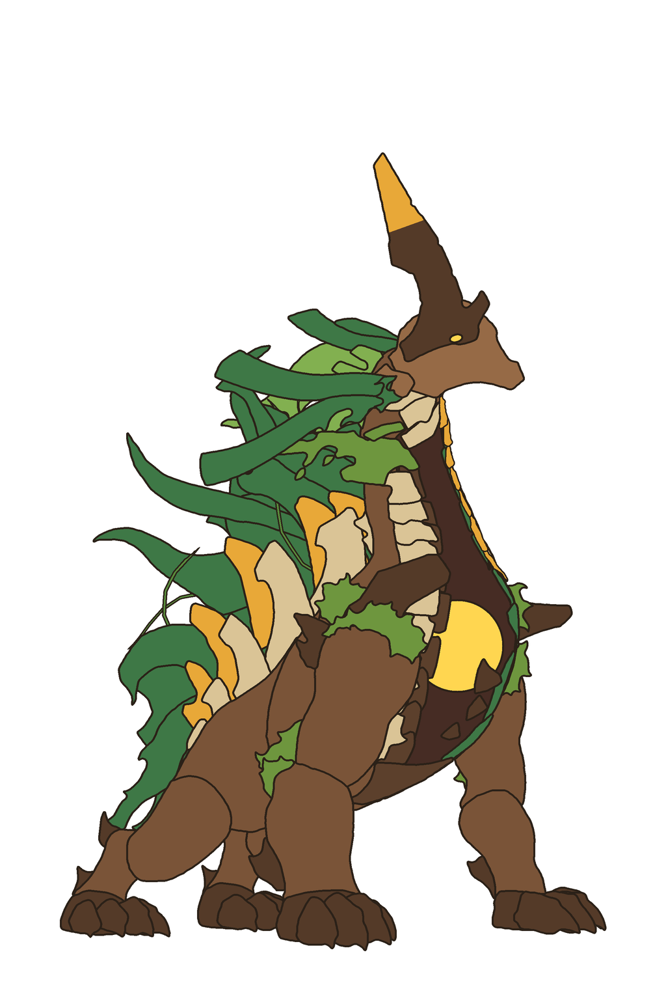
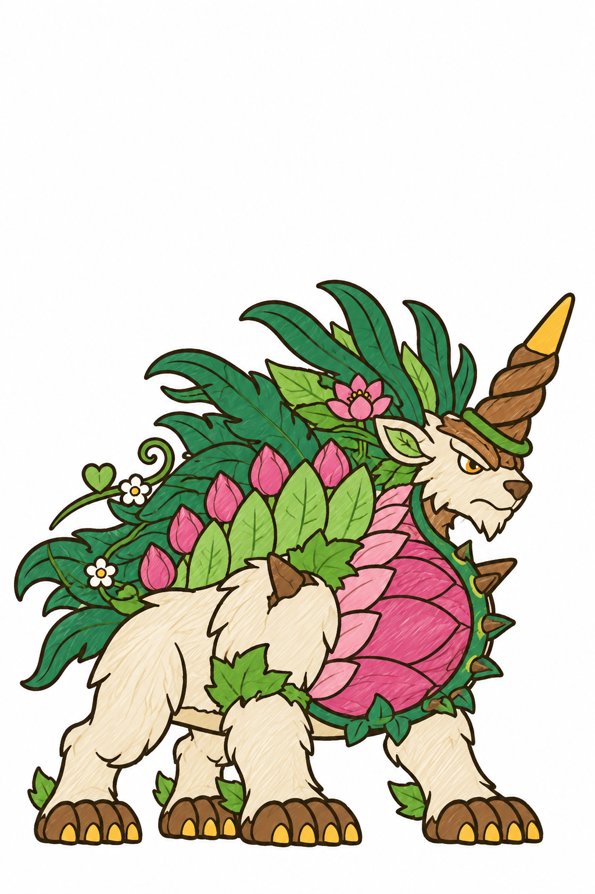
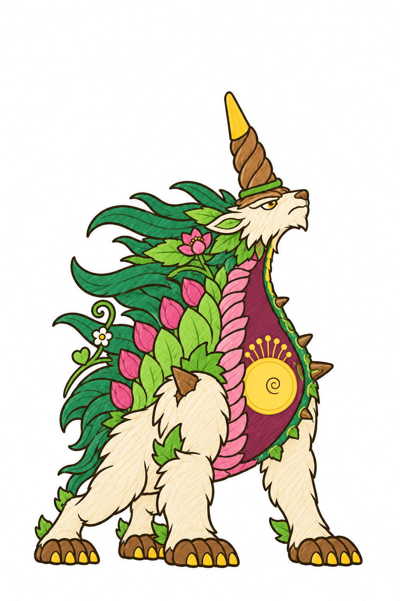
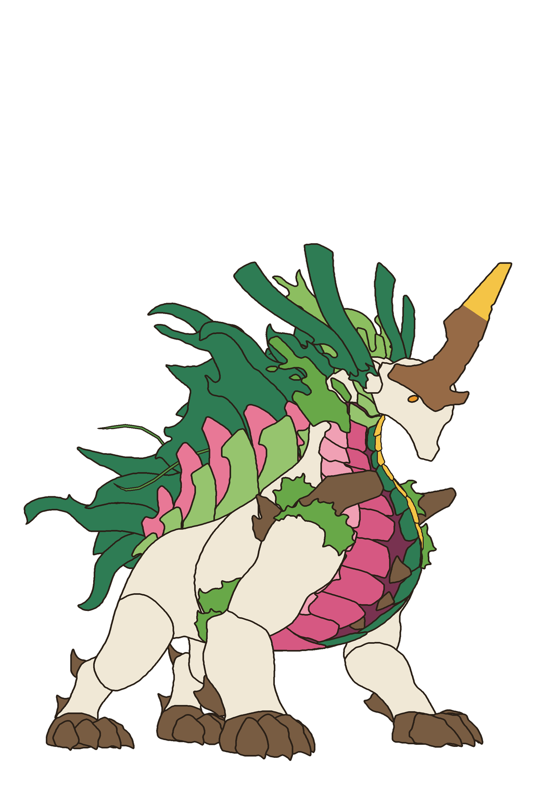
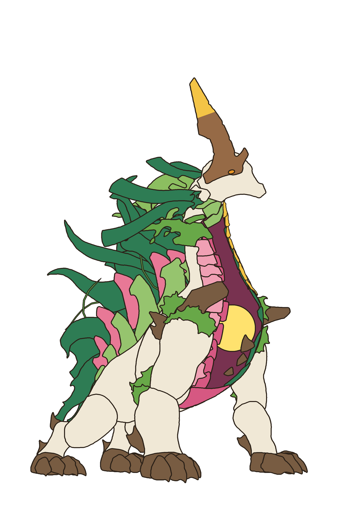

A · dáng nghỉThân vỏ cây nâu, rêu ở vai; sừng gỗ sẫm ngọn hổ phách; bờm dương xỉ, lá to, dây leo; sống lưng xen gai gỗ nhạt và tinh thể hổ phách; bầu ngực là thùng vỏ cây sẫm, khe sáng vàng.
A · dáng nghỉThân vỏ cây nâu, rêu ở vai; sừng gỗ sẫm ngọn hổ phách; bờm dương xỉ, lá to, dây leo; sống lưng xen gai gỗ nhạt và tinh thể hổ phách; bầu ngực là thùng vỏ cây sẫm, khe sáng vàng.Cùng bố cục với rig gốc: bốn chân, vai cao mông thấp, một sừng lớn, mào đầu, bờm lưng, hàng mảnh dọc sống lưng, bầu ngực nhiều tấm. Mỗi hướng hai ảnh: dáng nghỉ (ngực đóng, khe sáng) và dáng chiêu cuối (ngẩng cao, ngực mở, lộ quả tim). Loài, màu, chi tiết là đề xuất.
A · dáng nghỉThân vỏ cây nâu, rêu ở vai; sừng gỗ sẫm ngọn hổ phách; bờm dương xỉ, lá to, dây leo; sống lưng xen gai gỗ nhạt và tinh thể hổ phách; bầu ngực là thùng vỏ cây sẫm, khe sáng vàng.
A · mở ngựcCác tấm vỏ cây trượt dồn sang bên; trong hốc sẫm có rễ ôm quả tim nhựa hổ phách vàng.
sơ đồ bố cục (dáng nghỉ)Khối từng part của rig, tô theo nhóm màu của mình: GPT chỉ lấy chỗ đặt, cỡ, thứ tự chồng.
sơ đồ bố cục (mở ngực)Dáng open_02 của rig: sừng dựng thẳng, khoang ngực lộ, quả tim ở chỗ rộng nhất.
B · dáng nghỉThú sống lông trắng kem; sừng gỗ xoắn ngọn vàng; bờm lá to lục sẫm, dây leo, hoa trắng; sống lưng xen đài hoa lục nhạt và nụ sen hồng; bầu ngực là một nụ sen khổng lồ, khe sáng vàng.
B · mở ngựcCác cánh sen trượt dồn sang bên; trong lòng nụ hồng rượu có vòng nhị vàng quanh quả tim vàng.
sơ đồ bố cục (dáng nghỉ)
sơ đồ bố cục (mở ngực)